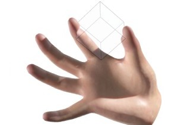
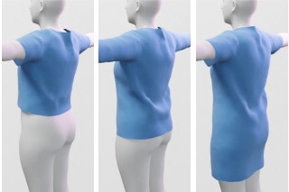

Research
Book Chapters

|
Video-Based Character Animation Dan Casas, Peng Huang and Adrian Hilton in Marcus Magnor, Oliver Grau, Olga Sorkine-Hornung and Christian Theobalt (Eds.): Digital Representations of the Real World: How to Capture, Model, and Render Visual Reality ISBN 9781482243819, pp. 239–252, CRC Press, 2015. pdf bib CRC Press |
Selected Journals and Conferences
|  |
Contact-Centric Deformation Learning Cristian Romero, Dan Casas, Maurizio M. Chiaramonte, and Miguel A. Otaduy ACM Transactions on Graphics (Proc. of SIGGRAPH), 2022 pdf video project |
|
SNUG: Self-Supervised Neural Dynamic Garments Igor Santesteban, Miguel A. Otaduy, and Dan Casas IEEE/CVF Conference on Computer Vision and Pattern Recognition (CVPR), 2022 (Oral) pdf video project code |
|
A Survey on Intrinsic Images: Delving Deep into Lambert and Beyond Elena Garces, Carlos Rodriguez-Pardo, Dan Casas, and Jorge Lopez-Moreno International Journal of Computer Vision (IJCV), 2022 pdf project arXiv DOI |
|
Fine Virtual Manipulation with Hands of Different Sizes Suzanne Sorli, Dan Casas, Mickeal Verschoor, Ana Tajadura-Jiménez, and Miguel A. Otaduy IEEE International Symposium on Mixed and Augmented Reality (ISMAR), 2021 pdf video project DOI |
|
Self-Supervised Collision Handling via Generative 3D Garment Models for Virtual Try-On Igor Santesteban, Nils Thuerey, Miguel A. Otaduy, and Dan Casas IEEE/CVF Conference on Computer Vision and Pattern Recognition (CVPR), 2021 pdf video project code data DOI |
|
Learning Contact Corrections for Handle-Based Subspace Dynamics Cristian Romero, Dan Casas, Jesus Perez, and Miguel A. Otaduy ACM Transactions on Graphics (Proc. of SIGGRAPH), 2021 pdf video project |
|
RGB2Hands: Real-Time Tracking of 3D Hand Interactions from Monocular RGB Video Jiayi Wang, Franziska Mueller, Florian Bernard, Suzanne Sorli, Oleksandr Sotnychenko, Neng Qian, Miguel A. Otaduy, Dan Casas, and Christian Theobalt ACM Transactions on Graphics (Proc. of SIGGRAPH Asia), 2020 pdf video project DOI |
|  |
Fully Convolutional Graph Neural Networks for Parametric Virtual Try-On Raquel Vidaurre, Igor Santesteban, Elena Garces, and Dan Casas Computer Graphics Forum (Proc. of ACM Symposium on Computer Animation, SCA), 2020 pdf video project DOI |
|
Tactile Rendering Based on Skin Stress Optimization Mickeal Verschoor, Dan Casas, and Miguel A. Otaduy ACM Transactions on Graphics (Proc. of SIGGRAPH), 2020 pdf video project DOI |
|
SoftSMPL: Data-driven Modeling of Nonlinear Soft-tissue Dynamics for Parametric Humans Igor Santesteban, Elena Garces, Miguel A. Otaduy and Dan Casas Computer Graphics Forum (Proc. Eurographics), 2020 pdf video project DOI |
|
Modeling and Estimation of Nonlinear Skin Mechanics for Animated Avatars Cristian Romero, Miguel A. Otaduy, Dan Casas, and Jesus Perez Computer Graphics Forum (Proc. Eurographics), 2020 pdf video project DOI |
|
Real-time Pose and Shape Reconstruction of Two Interacting Hands With a Single Depth Camera Franziska Mueller, Micah Davis, Florian Bernard, Oleksandr Sotnychenko, Mickeal Verschoor, Miguel A. Otaduy, Dan Casas, and Christian Theobalt ACM Transactions on Graphics (Proc. SIGGRAPH), 2019 pdf video project DOI |
|
Learning-Based Animation of Clothing for Virtual Try-On Igor Santesteban, Miguel A. Otaduy and Dan Casas Computer Graphics Forum (Proc. Eurographics), 2019 pdf video project code data bib DOI |
|
BRDF Estimation of Complex Materials with Nested Learning Raquel Vidaurre Dan Casas, Elena Garces and Jorge Lopez-Moreno IEEE Winter Conference on Applications of Computer Vision (WACV), 2019 pdf supplemental video project |
|
Learning Nonlinear Soft-Tissue Dynamics for Interactive Avatars Dan Casas and Miguel A. Otaduy Proceedings of the ACM on Computer Graphics and Interactive Techniques (ACM i3D), 2018 pdf video DOI |
|
GANerated Hands for Real-time 3D Hand Tracking from Monocular RGB Franziska Mueller, Florian Bernard, Oleksandr Sotnychenko, Dushyant Mehta, Srinath Sridhar, Dan Casas and Christian Theobalt Conference on Computer Vision and Pattern Recognition (CVPR), 2018 pdf supplemental bib DOI project |
|
Real-time Hand Tracking under Occlusion from an Egocentric RGB-D Sensor Franziska Mueller, Dushyant Mehta, Oleksandr Sotnychenko, Srinath Sridhar, Dan Casas and Christian Theobalt International Conference on Computer Vision (ICCV), 2017 pdf bib DOI project |
|
Monocular 3D Human Pose Estimation In The Wild Using Improved CNN Supervision Dushyant Mehta, Helge Rhodin, Dan Casas, Pascal Fua, Oleksandr Sotnychenko, Weipeng Xu and Christian Theobalt International Conference on 3D Vision (3DV), 2017 pdf bib DOI project |
|
VNect: Real-time 3D Human Pose Estimation with a Single RGB Camera Dushyant Mehta, Srinath Sridhar, Oleksandr Sotnychenko, Helge Rhodin, Mohammad Shafiei, Hans-Peter Seidel, Weipeng Xu, Dan Casas and Christian Theobalt ACM Transactions on Graphics (Proc. SIGGRAPH), 2017 pdf bib DOI project |
|
Multi-view Performance Capture of Surface Details Nadia Robertini, Dan Casas, Edilson de Aguiar and Christian Theobalt International Journal of Computer Vision (IJCV), 2017 pdf bib DOI |
|
EgoCap: Egocentric Marker-less Motion Capture with Two Fisheye Cameras Helge Rhodin, Christian Richardt, Dan Casas, Eldar Insafutdinov, Mohammad Shafiei, Hans-Peter Seidel, Bernt Schiele and Christian Theobalt ACM Transactions on Graphics (Proc. SIGGRAPH Asia), 2016 pdf bib video project DOI |
|
Model-based Outdoor Performance Capture Nadia Robertini, Dan Casas, Helge Rhodin, Hans-Peter Seidel and Christian Theobalt International Conference on 3D Vision (3DV), 2016 pdf bib video project DOI |
|
General Automatic Human Shape and Motion Capture Using Volumetric Contour Cues Helge Rhodin, Nadia Robertini, Dan Casas, Christian Richardt, Hans-Peter Seidel and Christian Theobalt European Conference on Computer Vision (ECCV), 2016 pdf bib video project DOI |

|
Real-time Joint Tracking of a Hand Manipulating an Object from RGB-D Input Srinath Sridhar, Franziska Mueller, Michael Zollhöfer, Dan Casas, Antti Oulasvirta and Christian Theobalt European Conference on Computer Vision (ECCV), 2016 pdf bib video project DOI |
|
Reconstruction of Personalized 3D Face Rigs from Monocular Video Pablo Garrido, Michael Zollhöfer, Dan Casas, Levi Valgaerts, Kiran Varanasi, Patrick Perez and Christian Theobalt ACM Transactions on Graphics (presented at SIGGRAPH), 2016 pdf bib video project DOI |
|
Avatar Reshaping and Automatic Rigging Using a Deformable Model Andrew Feng, Dan Casas and Ari Shapiro ACM Motion in Games (MIG), 2015 pdf bib video project binnary DOI |
|
|
4D Model Flow: Precomputed Appearance Alignment for Real-time 4D Video Interpolation Dan Casas, Christian Richardt, John Collomosse, Christian Theobalt and Adrian Hilton Computer Graphics Forum (Proc. of Pacific Graphics), 2015 pdf bib video project DOI |
|
Optimal Representation of Multiple-View Video Marco Volino, Dan Casas, John Collomosse and Adrian Hilton British Machine Vision Conference (BMVC), 2014 (Oral) pdf bib video project DOI |

|
4D Video Textures for Interactive Character Appearance Dan Casas, Marco Volino, John Collomosse and Adrian Hilton. Computer Graphics Forum (Proc. of Eurographics), 2014 pdf bib video project data DOI |
|
Animation Control of Surface Motion Capture Margara Tejera, Dan Casas, and Adrian Hilton. IEEE Transactions on Cybernetics, 2013 pdf bib DOI |
|
Interactive Animation of 4D Performance Capture Dan Casas, Margara Tejera, Jean-Yves Guillemaut and Adrian Hilton. IEEE Transactions on Visualization and Computer Graphics (TVCG), 2013 pdf bib project DOI |
|
4D Parametric Motion Graphs for Interactive Animation Dan Casas, Margara Tejera, Jean-Yves Guillemaut and Adrian Hilton. ACM/SIGGRAPH Symp. on Interactive 3D Graphics and Games (I3D), 2012 Honorable Mention for the Best Paper Award pdf bib video project DOI |

|
Parametric Control of Captured Mesh Sequences for Real-Time Animation Dan Casas, Margara Tejera, Jean-Yves Guillemaut and Adrian Hilton. ACM Motion in Games, 2011 Springer Lecture Notes in Computer Science 7060, 242–253, 2011. web pdf video |
Demos, Short Papers, Thesis and Miscellaneous
|
Teaching 3D Computer Animation to Non-programming Experts Dan Casas Eurographics (Education Paper), 2021 pdf DOI |
|
Real-time 3D Human Pose Estimation with a Single RGB Camera Dushyant Mehta, Srinath Sridhar, Oleksandr Sotnychenko, Helge Rhodin, Franziska Mueller, Weipeng Xu, Dan Casas and Christian Theobalt Demo at Conference on Computer Vision and Pattern Recognition (CVPR), 2017 project |

|
Blendshapes from Commodity RGB-D Sensors Dan Casas, Oleg Alexander, Andrew W. Feng, Graham Fyffe, Ryosuke Ichikari, Paul Debevec, Rhuizhe Wang, Evan Suma, Ari Shapiro. SIGGRAPH 2015 Talks |
|
Rapid Photorealistic Blendshapes from Commodity RGB-D Sensors Dan Casas, Oleg Alexander, Andrew W. Feng, Graham Fyffe, Ryosuke Ichikari, Paul Debevec, Rhuizhe Wang, Evan Suma, Ari Shapiro. Demo at ACM/SIGGRAPH Symp. on Interactive 3D Graphics and Games (I3D), 2015. Best Demo Award pdf award ACM |

|
Interactive Video-Realistic Character Animation from 4D Performance Capture Dan Casas PhD Thesis, 2014 Advisor: Prof. Adrian Hilton. University of Surrey pdf video |
|
Real-Time Face Tracking Methods Dan Casas MSc Thesis, June 2009 Advisor: Dr. Fernando de la Torre. Universitat Autònoma de Barcelona - Carnegie Mellon University pdf video |
Service
Organization| 2021 | Papers Co-chair at ACM SIGGRAPH Symposium on Interactive 3D Graphics and Games (i3D) |
| 2020 | General Co-chair at ACM SIGGRAPH Symposium on Interactive 3D Graphics and Games (i3D) |
| 2019 – 2020 | Organizer at DynaVis: International Workshop on Dynamic Scene Reconstruction @ CVPR |
| 2019 | Poster Chair at ACM SIGGRAPH Symposium on Interactive 3D Graphics and Games (i3D) |
| 2019 | Paper Chair at Congreso Español de Informática Gráfica (CEIG) |
| 2018 | Local Chair at Congreso Español de Informática Gráfica (CEIG) |
International Program Comittee
| 2022 | Eurographics (Sort Papers) |
| 2020 | International Conference on 3D Vision (3DV) |
| 2018 – 2020 | ACM SIGGRAPH Conference on Motion, Interaction and Games (MIG) |
| 2019 | SIGGRAPH Asia (Technical Papers Conflict of Interest Coordinators) |
| 2019 | SIBGRAPI 2019 (Computers & Graphics Track) |
| 2018 | ACM SIGGRAPH Symposium on Interactive 3D Graphics and Games (i3D) |
| 2015 – 2020 | European Conference on Visual Media Production (CVMP) |
| 2015 – 2018 | Congreso Español de Informática Gráfica (CEIG) |
Reviewer
| 2022 | International Conference on Learning Representations (ICLR) |
| 2016 – 2022 | IEEE/CVF Conference on Computer Vision and Pattern Recognition (CVPR) |
| 2018, 2020-22 | Eurographics |
| 2016, 2021 | International Conference on 3D Vision (3DV) |
| 2019-21, | British Machine Vision Conference (BMVC) |
| 2017, 2019, 2021 | IEEE/CVF International Conference on Computer Vision (ICCV) |
| 2016-17, '19, '21 | ACM SIGGRAPH |
| 2020 | Winter Conference on Applications of Computer Vision (WACV) |
| 2020 | ACM SIGGRAPH Asia |
| 2016, 2018, 2020 | European Conference on Computer Vision (ECCV) |
| 2018 | High Performance Graphics (HPG) |
| 2015 – 2018 | IEEE Transactions on Visualization and Computer Graphics (TVCG) |
| 2017 | Pacific Graphics |
| 2016, 2017 | International Journal on Computer Vision (IJCV) |
{kind=link}
{kind=link}
{kind=link}